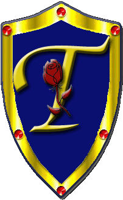

|

|
Das schwarze Brett
|
|
| Übersicht,
RL-Treffen |
|
Festival-Mediaval 11.-13.09.2015
|
Tamira
 |
Festival-Mediaval VIII 11.9. - 13.9.2015 in Selb
Diesmal mit einem Celtic Special!!
Alle Infos findet Ihr unter http://www.festival-mediaval.de/
Zur Zeit gibt es Early-Bird-Tickets bei etix für 77,- (zzgl. Gebühren) zu bekommen. Dieses Angebot gilt bis zum 31.12.2014.Ab dem 1.1.2015 gibt es die Tickets dann nur noch regulären Preis von 84,- (zzgl. Gebühren).
|
12.11.14 9:51

 |
|
Tamira
|
Folgende Bands spielen auf dem Festival:
Corvus Corax
Omnia
WirrWahr
Poeta Magica
Pyrates
Ignis Fatuu
PurPur
Cesair
Chor on Air
Celtic Special Bands:
Carlos Nunes
Moya Brennan
Kila
Ashley Davis
The Dolmen
Skerryvore
Irxn
Cuelebre
Celtic Voyager
Celtic Gobshites
Carpe Noctem
Wadokyo
Jonny Robles |
22.01.15 22:18
|
|
Tamira
|
Es werden fleissige Helfer gesucht, die Lust und Zeit haben, mitzuhelfen. Folgende Möglichkeiten gibt es:
1. Aufbau (vom 31.08. bis 10.09.2015)
2. Festival (vom 11. bis 13.09.2015)
3. Abbau (vom 14. bis 18.09.2015)
Es gibt an allen Tagen volle Verpflegung für alle Helfer. Zum Übernachten gibt es die Möglichkeit auf dem Festival Gelände zu zelten.
Anmelden kann man sich unter http://www.festival-mediaval.com/forms/helfer
|
10.03.15 16:11
|
|
Tamira
|
Die Bühnenplänen sind fertig und online:
http://www.festival-mediaval.com/buehnenplaene |
17.04.15 12:15
|
|
Tamira
|
Kino auf dem Goldberg
Das Festival Mediaval, das vom 11. bis 13.09.2015 in Selb stattfindet, hat für dieses Jahr ein weiteres Highlight zu verkünden. Nach dem großen Erfolgen auf der RPC und diversen anderen Fantasyevents kommt der Film "Mara und der Feuerbringer" auch auf den Goldberg. In einem eigens dafür eingerichteten Kinozelt können sich die Festivalbesucher den Film, der mehrmals täglich laufen wird, anschauen. Außerdem wird Tommy Krappweis, Regisseur des Films und Autor der Buchvorlage, ebenfalls vor Ort sein. Wer jetzt nicht weiß, von welchem Film wir reden, dem empfehlen wir den Trailer. Klickt euch rein! - www.unart.tv
Die Hauptdarstellerin aus MARA UND DER FEUERBRINGER Lilian Prent wird die gesamten drei Tage über anwesend sein!! |
12.06.15 15:49
|
|
Tamira
|
Freie Plätze für Helfer
Wir haben noch einige Helfer-Plätze frei!
Wer also mal hinter die Kulissen schauen und ein Teil des Festival-Mediaval-Teams werden will, fülle bitte das Helfer-Formular aus.
Für Aufbauhelfer gibt es pro 3 Tage Aufbau 1 Tag Festival umsonst.
Für Festival-Helfer ist der Eintritt umsonst und es gibt Catering und einen Schlafplatz im Zelt.
Für Abbau-Helfer gibt es jeden Abend Abbau-Parties, Merchprodukte, den Festival-Eintritt für dieses od. nächstes Jahr und die Rückfahrtkosten.
Am Meisten habt ihr davon, von Anfang bis Ende dabei zu sein, das schweißt die Gemeinschaft zusammen und macht viel Spaß. |
25.07.15 17:03
|
|
Übersicht,
RL-Treffen
|
|
|
|